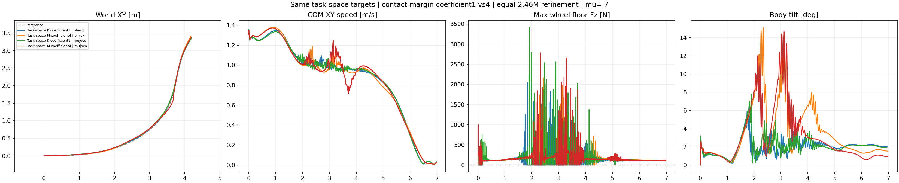
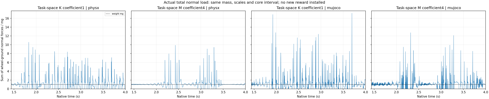

The stronger-contact actor does not pass the complete nominal task across both engines. Better individual metrics do not establish stable-contact turning. No new friction sweep is launched.
| Cell | Core XY RMSE (m) | Speed/reference | Beta RMSE (deg) | Any-wheel support (%) | Max gap (ms) | HF/original | Failed original checks |
|---|---|---|---|---|---|---|---|
| Task-space K coefficient1 | physx | 0.0658 | 0.993 | 1.78 | 85.52 | 52.5 | 0.518 | any_wheel_every_physical_sample, longest_no_support_gap |
| Task-space M coefficient4 | physx | 0.0542 | 0.983 | 3.88 | 94.49 | 65.0 | 0.954 | any_wheel_every_physical_sample, longest_no_support_gap, core_HF_reduction |
| Task-space K coefficient1 | mujoco | 0.0803 | 0.990 | 1.93 | 85.88 | 52.5 | 0.660 | any_wheel_every_physical_sample, longest_no_support_gap |
| Task-space M coefficient4 | mujoco | 0.0638 | 0.976 | 5.48 | 90.03 | 65.0 | 0.971 | any_wheel_every_physical_sample, longest_no_support_gap, core_HF_reduction |
Core: 1.44–4.00 s. Support: 0.02–6.96 s, actual measured upward wheel/ground normal force strictly above 5 N at every 2.5 ms sample. Either wheel may support; bilateral contact is not required. Retained gates: core/whole XY RMSE ≤0.15 m and peak ≤0.30 m; core speed ratio 0.95–1.10; intended nonzero beta RMSE ≤10 degrees; core angular-XY 10–100 Hz RMS ≤0.7 of original same-engine PPO; support 100% and maximum gap zero. No absolute-height or geometric-flight failure gate is added. Body integrity and within-turn speed also matter; bearing after falling and lower chatter after stopping do not establish success. Single-seed episodes are not robustness qualification.
control_physx. All four inspected frames are upright with low tilt. At 3.00 and 4.00 s both wheel forces are zero and the preceding eight native samples are unsupported. The control passes tracking/beta/HF but not continuous support.
margin4_physx. All inspected frames remain upright. At 2.24 s the body tilt is 10.9 degrees, higher than the control, with right-wheel support. At 3.00 and 4.00 s at least one wheel is loaded. The full trace nevertheless contains 65 ms gaps and increased root HF; maximum core tilt reaches 15.14 degrees. Speed visibly oscillates in the plotted core profile. No collapse is visible in these stills; support duty alone is not task success.
control_mujoco. Upright with low body tilt in the inspected frames and good path tracking. At 3.00 s only one of the preceding eight physical samples is supported even though the instantaneous left force is153 N. Native support is intermittent.
margin4_mujoco. Upright in all inspected frames. At 2.24 s the right wheel is loaded but only two of eight preceding native samples are supported; at 3.00 s both forces and all eight preceding support indicators are zero. At 4.00 s support returns. The time plot shows core speed overshoots followed by a slowdown near3.6 s, despite a passing mean speed ratio. Root HF and maximum15-degree tilt are larger than the K control, and 65 ms gaps remain.

The total-normal-load residual RMS, normalized by the same audited 218.50 N robot weight, decreases from 1.362 to 0.856 in PhysX and 1.725 to 1.243 in MuJoCo. Root angular HF nevertheless increases. The named-leg-only velocity audit finds 10–100 Hz RMS increasing from 1.545 to 2.248 rad/s in PhysX and 1.667 to 2.238 rad/s in MuJoCo; wheel spin is excluded using the actual joint names. These observations do not establish causal attribution. A prospective total-load Huber statistic is computed offline only, and neither a load-balance nor a leg-velocity reward was installed in this experiment.
Total-load statistics · Named physical leg-motion audit and Parseval verification.

Both arms use the same free-intermediate-leg task-space definitions: base and wheel-center XY position/linear velocity, base angular velocity and both wheels' world-referenced axial plane headings. Root orientation, speed, yaw-rate, nonzero beta, free absolute height and observations are retained. The four task-space definitions are identical between these two actors; they are not an additional intervention in this comparison.
F_any[s] = max(Fz_left[s], Fz_right[s], 0) margin[s] = clip((0.5*m*g - F_any[s]) / (0.5*m*g - 5 N), 0, 1) C = max over the 8 actual physical samples of margin[s] r_contact = 0.4 * (G_gated_support_bonus - lambda * C) K: lambda = 1; M: lambda = 4
The positive support/tracking/reference-beta bonus G, force sampling, force threshold and margin mapping are unchanged. The expression is shown before the standard reward-manager multiplication by the 0.02 s policy interval. The external contact weight remains +0.4, all 15 reward weights and other 14 reward definitions stay unchanged. No new height target, motor gain, action filter, geometry, tire law or observation is introduced.
The control is the completed task-space K actor from the preceding experiment. Each arm starts independently from the same original 12,288,000-transition K checkpoint 8cb011e4c5e2a33a685bc58280df410141ab99aa245892042762b8956595fe5a. Actor, critic and normalizers are bit-identical at the start. Fresh Adam moments, learning rate 0.0001, clip 0.1 and 512×24×200 = 2,457,600 additional transitions are identical, giving each resulting policy 14,745,600 cumulative transitions. M does not resume the resulting task-space K actor. Runner configuration, task profiles, tracking source/parameters, asset/model/reference hashes, weights, initial physical states and original friction/encoder/COM/push DR are independently compared.
Training uses native PhysX, original held position targets and PD 500/10 with original motor torque/speed limits. Startup wheel-friction DR remains uniform [0.3,1.2]. Each actor is validated in native PhysX and native CPU MuJoCo at fixed mu 0.7 without DR/noise or hidden resets. One actor is used across both engines. Closed-loop engine transfer changes future observations/actions and is not a solver-only error measurement.
The native smoke and its strict independent CPU checkpoint/export check passed before formal training. The full M refinement and final CPU check completed. Fifteen CPU tests pass, including rejection of relaxed support gates and wheel-spin-invariant heading tests. An unexecuted first source draft and failed CPU test log are retained: that draft expected the wrong exception type for an already rejected invalid setting. Only the test expectation changed before the executed archive; no production code, experiment parameter, training outcome or validation result was used for that revision.
All 350 video frames decode. Original numerical traces, policy identities, physical clocks and common fixed relative camera are independently verified. Stills at 2.24/3.00/4.00/6.96 s were inspected; full manual playback is not claimed. The 4×1 replay uses opaque actual native poses, fixed world angles, translation-only following at one common camera distance and shared world-XY scale. No pose, height or contact correction is applied. All owned compute is terminal. Weights, physical assets, credentials and native libraries are excluded from the evidence collection.
Full metrics and policy proofs · Collected evidence hashes · Replay verification · Still review · Native body contact, initial sample separated · CPU tests.
Protocol · Trainer · Strict verifier · Native evaluator · Analyzer · Renderer. Existing dependency/asset locations and exact invocation arguments remain in collected launch records.